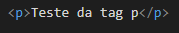
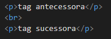

O html 5 é a versão mais atual dessa linguagem de marcação de hiper textos. É fundametal ter o conhecimento das tags que podem ser utilizadas para desenvolvimento de qualquer página. Pensando nisso, criei essa página com algumas tags básicas do html 5 mais utilizadas, no qual veremos abaixo.
Documento oficial 01Documento oficial 02
- h1 - h6 Saiba mais
- p Saiba mais
- br Saiba mais
- a Saiba mais
- img Saiba mais
- ul Saiba mais
- li Saiba mais
Tag: h
A tag h tem função de classificar o texto em níveis de importância, onde podemos ir da tag h1 até à tag h6, sendo que a primeira tem maior importância e a última tem menor importância. por "consequência" a configuração padrão é para que a tag de maior importância fique com um tamanho de fonte maior que a de menor importância, mas isso pode ser alterado utilizando a estilização (CSS).
Exemplos de utilização:
Código:
Efeito visual:
h1- Teste de tag.
h2- Teste de tag.
h3- Teste de tag.
h4- Teste de tag.
Tag: p
A tag p é utilizada para escrever algum texto "qualquer" que seja considerado um parágrafo.
Exemplos de utilização:
Código:
Efeito visual:
Teste da tag p
Tag: br
A tag br é utilizada para quebrar linha, onde a quantidade de tags br escritas é a quantidade de linhas que será quebrada. Obs.: Essa tag é recomentada se utilizar para quebrar apenas uma linha por vez.
Exemplos de utilização:
Código:
Efeito visual:
tag antecessora
tag sucessora
Tag: a
A tag a é utilizada para criar link a um endereço local ou na internet. Obs.: O atributo tagert dessa tag tem função de abrir o link em uma nova guia do navegador.
Tag: img
Exemplos de utilização:
Código:
Efeito visual:
Tag: ul e li
As tags ul e li são utilizadas para criar listas, onde a primeira é para criar uma lista não ordenada (que não recebe numeração) e a segunda para escrever em cada linha da lista.
Exemplos de utilização:
Código:
Efeito visual:
- Felipe
- João
- Maria
- Pedro
- Camila